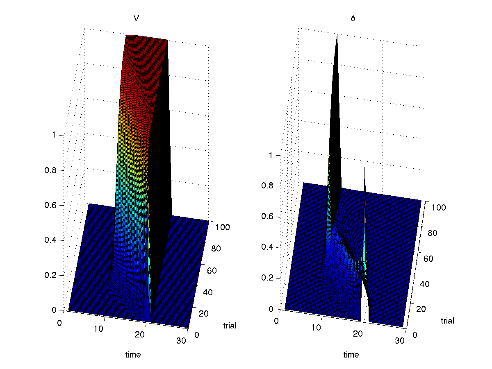

We are going to look at how temporal difference models work in two examples. The base of the code that we will work from can be downloaded here. Download the file, locate it in a terminal and extract the contents with the command:
tar xvfz reinforcement_learning.tgz
For the first example, we are going to reproduce and play around with Figure 3 from
Schultz, Dayan, & Montague (1997). Recall that this model learns to associate a
conditioned stimulus with a later reward. To speed things up, the basic code that runs
the model is provided for you in the folder reinforcement_learning/td with the
name td0.m. We are going to step through this code so that you understand how
it works. Then, you are going to tweak it. So look at td0.m as you read the
next few paragraphs.
We are going to model learning over 100 trials (nTrials = 100;),
with 30 time steps (nSteps = 30;) per trial. Recall that state
space was modeled as a tapped delay line so that states x
represent the amount of time since the conditioned stimulus occurred. State space will
be stored as a vector of size nSteps x 1 that will take on the
value [1 0 0 ...] when the stimulus occurs, the value [0 1 0 ...]
at the next time step, and so forth.
The job of the learning model is to learn weights w so that the
dot product of w and x equals the expected
reward to be earned from the current time step through the end of the trial. The weights
are initialized with w = zeros(nSteps,1);.
The final two parameters initialized are the time discount factor gamma and
the learning rate alpha. We are now ready to start the learning.
Learning occurs by looping through trials and then through steps within the trial. You'll
see the embedded for loops that do this. For each time step x is
set to be all zeros until the cue occurs. The cue is modeled to occur at time step 10:
x = zeros(nSteps,1);
if (step >= 10)
x(step-9) = 1;
end;
The estimated value (V) at any time step is the dot product of x
and w:
V(trial,step) = dot(x,w);The reward is modeled to occur at time step 20:
r(trial,step) = (step==20);
Remember that TD(0) works by comparing the immediate value estimate V(t)
with the immediate reward earned, r(t), and the next value estimate
V(t+1). To perform this update, we need to know V(t+1), which we
can only know one time step after seeing V(t). Learning can therefore only
occur after the first time step in the trial and must be done at time t+1
for the x and w seen at the previous time step. The code
if (step > 1)
delta(trial,step-1) = r(trial,step-1)+gamma*V(trial,step)-V(trial,step-1);
dw = alpha * delta(trial,step-1) * xlast;
w = w + dw;
end;
does this. The final bit of the program plots V and the prediction error
across time and trials. Run td0 in Matlab, and you should see a familiar
looking plot.

You are now ready to explore on your own. Try the following:
gamma from 1. Test your prediction.0.5 and 1.0. How variable is the reward predicted at time
step 20 across trials? How variable is the reward predicted when the cue occurs? What
happens to the variability in the prediction at the cue if learning rate is increased?It is easy to get the sense that TD(0) is so simple that it can do little more than learn to predict reward only at some short time following a cue -- and even that not very well. The second example aims to show you that TD(0) is much more impressive than this.
Switch to the tic-tac-toe folder. For this example, we are not going to step
through the code. Trust me that the learning algorithm is exactly the same as in the
classical conditioning case. (If you don't trust me, then consult simple_TD0.m.)
The only difference with tic-tac-toe is that the state space
is much larger, more complicated, and the transitions between states are more variable.
You may reasonably think that a learning algorithm that learn by bootstapping off of next
state predictions will be hopelessly lost, but you would be wrong.
To start TD(0) in tic-tac-toe, you have to create a global value matrix that the algorithm will modify. To do this enter the following in Matlab:
global TD0; TD0.V = rand(3^9, 2);The
3^9 is the number of possible states. (X, O, or nothing at each of 9
positions. I know that there are far fewer states than this, but I was much too lazy to
come up with anything more complicated.) The second dimension (2) allows the algorithm to
learn separate values for being the X or O player.
The TD algorithm chooses in the following manner. It finds all of the empty board spaces and check what value is has for putting its mark in each of those spaces. With probability 1-epsilon it then puts its mark in the space with the highest value. If more than one spaces have equal value then it chooses randomly among the equally best options. This 1-epsilon choice procedure is known as epsilon-greedy. Epsilon has an important purpose: it forces the model to explore options to help it avoid getting stuck in OK but not optimal action policies. While training the model, it is good to have a small positive value of epsilon (something like 0.1). As the model gets better you can reduce epsilon. Start by setting epsilon to zero with the command:
TD0.e = 0;
OK, now you're ready to play your newborn TD(0) algorithm. To do so, you run the command
game with three arguments. The first argument tells Matlab what kind of player
to play as player 1, the second argument is for player 2, and the third argument indicates
whether the game board should be drawn. For you to play as player 1 against TD(0), enter
game(@human, @simple_TD0, 1);Click on the board to place your mark. You better be able to win.
Three classes of players are coded up. There is human, simple_TD0,
and a purely random player randomXO. To use any player type you have to prefix
@ before the player type, as in the example above.
To get a quick feel for how well TD(0) works, let's set the algorithm to train itself. Begin by setting epsilon to 0.1 to facilitate learning. Then let TD play itself 10,000 times:
TD0.e = 0.1;
for i = 1:10000
game(@simple_TD0, @simple_TD0, 0);
end;
How good is the algorithm now?
TD0.e = 0.0; game(@human, @simple_TD0, 1);or
TD0.e = 0.0; game(@simple_TD0, @human, 1);Impressive?
Now let's get a better idea about how things work.
TD0.V = rand(3^9,2);)
and train TD for 10,000 trials with epsilon=0. How easy is it to beat now?V at any state is the estimated
probability of winning. We can make the model optimistic by starting V at
all 1's (i.e. TD0.V = ones(3^9,2);). Does this make for a good model after
10,000 training games?randomXO algorithm (play it once to confirm).
How well does TD(0) train up from playing the random player?